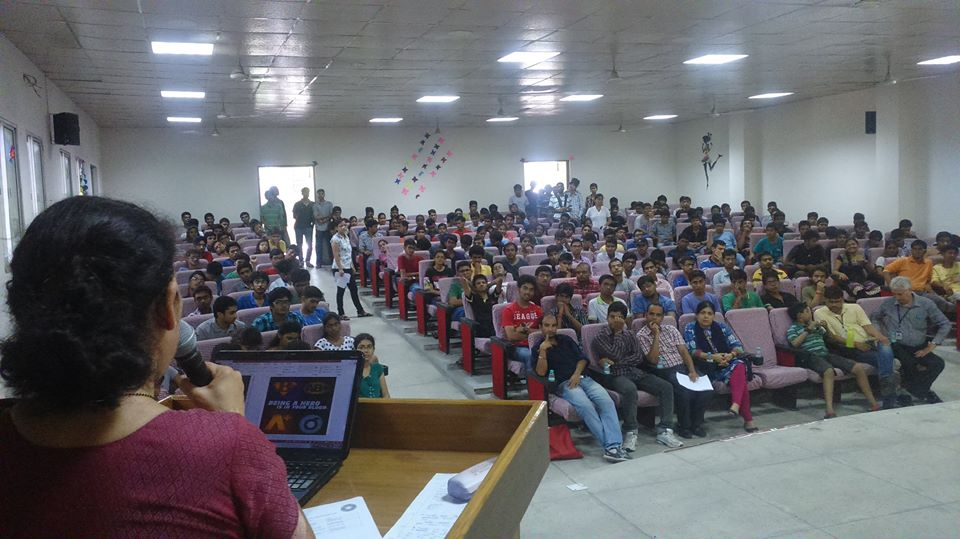
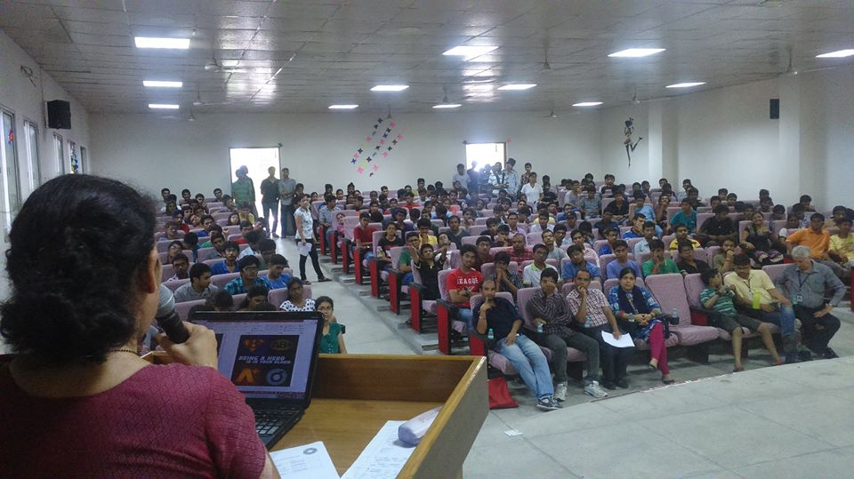

With the goal to work for the betterment of society and instill the spirit of social service among the young students, IIT Roorkee established NSS at institute level, headed by Dean of Students Welfare, IIT Roorkee.Currently, NSS, IIT Roorkee has over 700 active members from different disciplines, working rigorously for community health care, literacy drives, and environmental protection. Blood donation camps, AIDS awareness camps, informative lecture on human values,surveys and other such events are organized regularly. A total of 24000 hours was dedicated by only 1st year student voluntees to NSS IITR, this year. As highlighted by the motto ' NOT FOR ME, BUT FOR THE NATION ', the aim of the organization is to produce engineers who are socially responsible and work for the "all round" development of nation.
| Program Coordinator | Dr.Smita Jha |
| Program Officer | Dr.Vimal Kumar |
| Program Officer | Dr.Anil Kumar Gourishetty |
| General Secretary | Mohit Tanwar |
| Deputy General Secretary | Pratik Toshniwal |